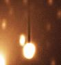
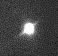
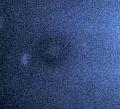
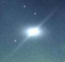
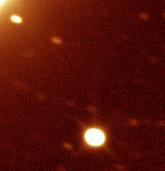

Several messages have been published on sci.astro and other places announcing that a Saturn-like companion was orbiting around Hale-Bopp, "proving that Hale-Bopp is an alien spacecraft heading toward the Earth".
Here is the famous picture (on the left, image obtained and sent on the net by Chuck Shramek). It is a decent picture of Hale Bopp, nicely showing its jets. I rotated the original image to set North up and East left, to compare it to a portion of the Digital Sky Survey (right, a scan of an old plate take at the Palomar observatory in 1954). I marked a few common stars, and plotted the path of the comet.
The "mysterious object", marked by "1", is a commons 9th magnitude star, as there are MANY in the sky! (SAO 141894 = PPM 180171 = gsc 5086 361, Spectral type M, Coordinates: 17h 49min 33.3sec -2deg 13' 45.4" (eqx 2000)). Some people have remarked that the star looks brighter in the amateur image than on the Palomar survey: this reflects the fact that this star is a cold M type, emitting most of its light in the red and infrared, where the CCD used for the "UFO" image is much more sensitive than the plates used at Palomar.
Mr.Shramek claims that the software he used to obtain a map of that region of the sky did not show that star. The problem is that he did not set up his software properly. Moreover, that close approach between the comet and this star was predicted: Ovidiu VADUVESCU, from the Astronomical Institute of the Romanian Academy Bucharest, publishes a list of "Appulses by PPM Stars of the Comet C/1995 O1 (Hale-Bopp)", that can be found on various WWW servers (e.g. at University of Maryland"; a local copy is available here).
While an error like this one can happen to the best observer, it seems that Ch.Shramek refuses to admit that he made a mistake and keeps claiming that SAO 141894 is following the comet (c.f. discussion on going on sci.astro). (update - Dec.24, 1996: Ch.Shramek's home page is working again; see for yourself...)
More details about this story, including the original messages posted on the net, can be found on The SLO Files of the www.haleBopp.com site.
The situation is the same for Hale-Bopp: CCD images are now very easy to obtain, but many of those who analyze them don't have the knowledge/education/experience to do so. The two pages linked below constitute a short summary of CCD imaging analysis:
Below is a table of "UFOs" obtained from the net, and a short description of what actually is the feature described as unusual.
| UFO | Identification |
|
National Astronomical Observatory, Japan: April 20, 1996  Another object, "moving with the comet", and "equipped with a dark funnel". The full image is available. |
|
| The original Shramek object: November 14, 1996  The image and a description of the observations of this "scary star" can be found on Shramek's home page |
|
| Mayagues, Puerto-Rico November 14, 1996 Alberto Quijano Vodniza, Jose Alonso  Dark rings around the comet. | These are the shadows of dust grain on the filter or on the window of the detector. As mentioned on the original page at JPL, this is an unprocessed image; the rings should disappear when the image is "flat-fielded". |
| Observatory unknown (HBST?) Nov.10, 1996???  "Saturn-like object" The full image, with the comet, is available on this site. This image appeared on Art Bell's page, with no indication on its origin. | The comet has an appearance compatible with the time stamp
indicated on the image. However, the background stars do not
seem match with that date.
The object seems elongated horizontally, which is difficult to explain (assuming the image has not been doctored). At this point, it is really hard to say anyting more about this image based only on the jpeg version: we really need more information about this observation. (Update Jan.1, 1997) A
very detailed
study of that picture has been perfomed and is available
on the
Enigma
site. The conclusions are the following:
|
|
National Astronomical Observatory, Japan: November 16, 1996  "Saturn-like object" from NAO, Japan. Full image, with the comet, is available on this site and on the NAO server. |
Another nice star:
|
Concluding remarks: Comet Hale-Bopp is a bright object. While it is very hard to observe now, it will become easier and easier in the coming weeks. Map and ephemerides are available on this site.
(updated Mon Jan 6 21:40:17 1997)
{kind=link}
{kind=link}
{kind=link}
{kind=link}
{kind=link}